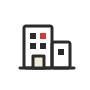
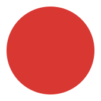

ホームページを、 ただつくるだけではない。 事業と集客を、ともに考える。
誰に、何を、どのように伝え、届けるか。
RE DESIGNは、事業と集客全体を整理したうえで、目的を達成するためのホームページを制作します。
誰に、何を、どのように伝え、届けるか。
RE DESIGNは、事業と集客全体を整理したうえで、目的を達成するためのホームページを制作します。
見た目を整え、必要な情報を掲載して公開する。
それだけでは、ホームページを必要な人に見つけてもらい、
問い合わせにつなげることはできません。
どのような顧客に来てほしいのか。
その顧客は、どこで情報を探しているのか。
何を伝えれば、興味や信頼につながるのか。
そして、どのような行動をしてほしいのか。
こうした設計がないまま制作を始めると、
ホームページはあっても、顧客を獲得する仕組みにはなりません。
まずは、お客様の事業について聞かせて下さい。
お客様自身にとっては当たり前になっていることの中にも、顧客に伝えるべき価値が隠れています。

課題達成したい目的
現状の整理
抱えている課題

事業抱えている課題

伝える軸対話を通じて事業を整理し、ホームページで伝える内容の軸を一緒に見つけていきます。
価値のある商品やサービスも、ただホームページに掲載するだけでは顧客に届きません。
どこで見つけてもらい、何に興味を持ち、どの情報から理解や信頼につなげるのか。01で整理した「誰に、何を伝えるか」をもとに、顧客との接点から問い合わせまでを一つの流れとして設計します。
見つけてもらう
接点を設計する
検索・広告・SNSなど、顧客との接点を設計する。
興味を持ってもらう
「自分に関係がある」訴求をつくる
顧客の課題と事業の価値を結び、「自分に関係がある」と感じる訴求をつくる。
理解してもらう
判断しやすい言葉と情報の順番
商品やサービスの違いを、判断しやすい言葉と情報の順番で伝える。
信頼してもらう
選ぶための根拠を整える
実績・事例・お客様の声など、選ぶための根拠を整える。
行動してもらう
迷わず相談できる導線ときっかけ
迷わず相談できる導線と、問い合わせのきっかけをつくる。
制作が始まると、担当は営業からディレクター、デザイナー、実装へと移っていきます。事業の話を一番聞いた人が、つくる場所にいないことは珍しくありません。そこに納期が重なると、目的は「お客様にOKをもらうこと」に置き換わり、出来上がったものが「なんとなく違う」ものになります。
01で整理した「誰に、何を伝えるか」と、02で設計した接点から問い合わせまでの流れ。それらを基準に、原稿・デザイン・実装を、一つのつながりとして制作します。
情報の優先順位、言葉、見せ方、操作性まで、すべてを同じ目的から判断することで、設計した意図を保ったまま、ホームページとして形にします。
 営業
営業
 ディレクター
ディレクター
 デザイナー
デザイナー
 プログラマー
プログラマー
 マーケター
マーケター
 設計責任者
ヒアリング
情報設計
原稿・
設計責任者
ヒアリング
情報設計
原稿・※ 案件に応じて専門パートナーと連携します。